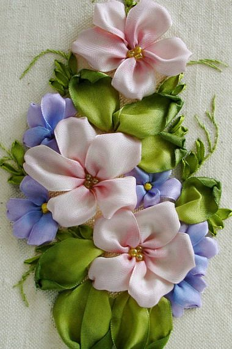
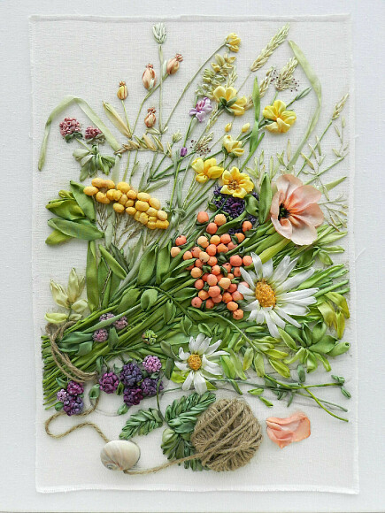

Еще на Руси хорошей женой считали ту девушку, которая умеет не только хозяйство вести, но и рукоделием заниматься. Искусство вышивания сохранилось и до наших дней. Среди их множества большую популярность приобрела объемная вышивка лентами.

Этот вид искусства представляет собой комплекс нескольких методов расшивания полотен. Уникальность его в том, что картинка «распускается» на глазах с помощью выпуклых элементов и деталей. Даже новичок, освоив несколько важных приемов, в скором времени сможет создать свой первый шедевр.
Ошибочно считать, что эта техника применима только для изготовления картин. Наряду с гобеленами «расписывают» шкатулки, мягкую ткань мебели и декора и даже вставки в кулоны. В работе используют ленты различной длины и природы: для начинающих подойдет атлас и шелк, для более «продвинутых» — органза и бархат. Чем больше деталей и цветовых решений, тем колоритнее будет вышивка. Добавить изысканности и фактуры работе помогут бусинки, пайетки, стеклярус.
Объемная вышивка лентами для начинающих кажется очень сложной на первый взгляд, но это не так. Надо лишь набраться терпения.
Для работы нам понадобятся следующие материалы: